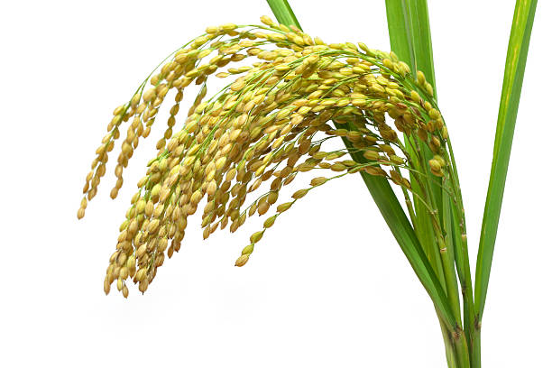
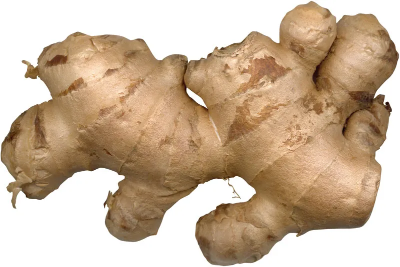

Site Selection: Choose elevated, well-drained areas with adequate rainfall.
Land Preparation: Clear land, plow, and create raised beds.
Select Planting Material: Obtain healthy tea seedlings or clones.
Planting: Plant seedlings in June-July, spaced 1 meter apart.
Shade Management (Optional): Provide temporary shade for young plants.
Weed Control: Regularly weed manually or use herbicides.
Irrigation: Supplement irrigation during dry periods.
Fertilization: Apply fertilizers based on soil tests.
Pest and Disease Management: Monitor and manage pests and diseases.
Pruning and Maintenance: Prune regularly, maintain plant health.
Harvesting: Begin harvesting tender leaves after 2-3 years.
Processing: Process leaves for various tea types: withering, rolling, oxidation, drying.
हिंदी
स्थल चयन: पर्याप्त वर्षा वाले ऊंचे, अच्छे जल निकास वाले क्षेत्र चुनें।
भूमि की तैयारी: भूमि साफ़ करें, जुताई करें और ऊँची क्यारियाँ बनाएँ।
रोपण सामग्री चुनें: स्वस्थ चाय के पौधे या क्लोन प्राप्त करें।
रोपण: जून-जुलाई में 1 मीटर की दूरी पर पौधे रोपें।
छाया प्रबंधन (वैकल्पिक): युवा पौधों के लिए अस्थायी छाया प्रदान करें।
खरपतवार नियंत्रण: नियमित रूप से हाथ से निराई-गुड़ाई करें या शाकनाशी का प्रयोग करें।
सिंचाई: शुष्क अवधि के दौरान पूरक सिंचाई करें।
उर्वरक: मृदा परीक्षण के आधार पर उर्वरकों का प्रयोग करें।
कीट और रोग प्रबंधन: कीटों और बीमारियों की निगरानी और प्रबंधन करें।
छंटाई और रखरखाव: नियमित रूप से छँटाई करें, पौधों के स्वास्थ्य को बनाए रखें।
कटाई: 2-3 साल बाद कोमल पत्तियों की कटाई शुरू करें।
प्रसंस्करण: विभिन्न प्रकार की चाय के लिए पत्तियों को संसाधित करें: मुरझाना, लुढ़कना, ऑक्सीकरण,
सुखाना।
सुनना
2. RICE / 2. चावल

ENGLISH
Land Preparation: Plow and level the land to ensure uniform water distribution.
Seed Selection: Choose high-quality rice seeds suitable for local conditions.
Seedbed Preparation: Prepare seedbeds in well-drained soil, sowing seeds densely.
Nursery Management: Maintain seedbeds by watering regularly and controlling weeds.
Seedling Transplantation: Transplant seedlings at the age of 25-30 days into the main field.
Water Management: Ensure proper water management, especially during the vegetative and reproductive
stages.
Fertilization: Apply fertilizers based on soil test results and crop stage requirements.
Weed Control: Implement manual weeding or use herbicides as necessary to control weeds.
Pest and Disease Management: Monitor for pests and diseases regularly, apply appropriate control
measures.
Harvesting: Harvest rice when grains are fully matured and straw turns golden.
Drying: Dry harvested rice in the sun to reduce moisture content for storage.
Storage: Store dried rice grains in a cool, dry place to prevent spoilage.
हिंदी
भूमि की तैयारी: समान जल वितरण सुनिश्चित करने के लिए भूमि की जुताई करें और उसे समतल करें।
बीज चयन: स्थानीय परिस्थितियों के लिए उपयुक्त उच्च गुणवत्ता वाले चावल के बीज चुनें।
बीज क्यारी तैयार करना: अच्छी जल निकास वाली मिट्टी में बीज क्यारी तैयार करें, सघन रूप से बीज बोएं।
नर्सरी प्रबंधन: नियमित रूप से पानी देकर और खरपतवार नियंत्रण करके बीज क्यारियों का रखरखाव करें।
पौध प्रत्यारोपण: 25-30 दिन की उम्र में पौध को मुख्य खेत में रोपित करें।
जल प्रबंधन: उचित जल प्रबंधन सुनिश्चित करें, विशेष रूप से वनस्पति और प्रजनन चरणों के दौरान।
उर्वरक: मिट्टी परीक्षण के परिणामों और फसल अवस्था की आवश्यकताओं के आधार पर उर्वरकों का प्रयोग करें।
खरपतवार नियंत्रण: खरपतवारों को नियंत्रित करने के लिए आवश्यकतानुसार हाथ से निराई-गुड़ाई करें या
शाकनाशी का उपयोग करें।
कीट और रोग प्रबंधन: कीटों और बीमारियों की नियमित रूप से निगरानी करें, उचित नियंत्रण उपाय लागू करें।
कटाई: चावल की कटाई तब करें जब दाने पूरी तरह पक जाएं और भूसा सुनहरा हो जाए।
सुखाना: भंडारण के लिए नमी की मात्रा कम करने के लिए कटे हुए चावल को धूप में सुखाएं।
भंडारण: सूखे चावल के दानों को खराब होने से बचाने के लिए ठंडी, सूखी जगह पर रखें।
सुनना
3. RUBBER / 3. रबड़
ENGLISH
Site Selection: Choose areas with well-drained soil and suitable climate (tropical or subtropical).
Land Preparation: Clear the land of vegetation and debris, plow, and level the land.
Clonal Selection: Obtain high-quality rubber clones from reputable sources.
Planting: Plant rubber clones in pre-dug holes or trenches, spaced according to recommended planting
density.
Water Management: Provide regular and adequate irrigation, especially during dry spells.
Shade Management: Provide temporary shade to young rubber plants using shade nets or natural shade from
trees.
Fertilization: Apply fertilizers based on soil tests and recommended doses for rubber cultivation.
Weed Control: Implement weed control measures to minimize competition for nutrients and water.
Pruning: Prune rubber trees to promote upward growth and facilitate latex collection.
Latex Collection: Start tapping rubber trees for latex production once they reach maturity (usually
after 5-7 years).
Latex Processing: Collect latex in cups attached to the trees and process it into rubber sheets or
blocks.
Pest and Disease Management: Monitor for pests and diseases regularly, apply appropriate control
measures to protect rubber trees.
हिंदी
साइट चयन: अच्छी जल निकासी वाली मिट्टी और उपयुक्त जलवायु (उष्णकटिबंधीय या उपोष्णकटिबंधीय) वाले
क्षेत्र चुनें।
भूमि की तैयारी: भूमि को वनस्पति और मलबे से साफ़ करें, जुताई करें और भूमि को समतल करें।
क्लोनल चयन: प्रतिष्ठित स्रोतों से उच्च गुणवत्ता वाले रबर क्लोन प्राप्त करें।
रोपण: अनुशंसित रोपण घनत्व के अनुसार पहले से खोदे गए गड्ढों या खाइयों में रबर क्लोन लगाएं।
जल प्रबंधन: नियमित और पर्याप्त सिंचाई प्रदान करें, विशेषकर सूखे के दौरान।
छाया प्रबंधन: शेड नेट या पेड़ों की प्राकृतिक छाया का उपयोग करके युवा रबर पौधों को अस्थायी छाया
प्रदान करें।
उर्वरक: रबर की खेती के लिए मिट्टी परीक्षण और अनुशंसित खुराक के आधार पर उर्वरक लागू करें।
खरपतवार नियंत्रण: पोषक तत्वों और पानी के लिए प्रतिस्पर्धा को कम करने के लिए खरपतवार नियंत्रण उपायों
को लागू करें।
छंटाई: ऊपर की ओर विकास को बढ़ावा देने और लेटेक्स संग्रह की सुविधा के लिए रबर के पेड़ों की छंटाई
करें।
लेटेक्स संग्रह: रबर के पेड़ों के परिपक्व होने पर (आमतौर पर 5-7 वर्षों के बाद) लेटेक्स उत्पादन के लिए
उनका दोहन शुरू करें।
लेटेक्स प्रसंस्करण: लेटेक्स को पेड़ों से जुड़े कपों में इकट्ठा करें और इसे रबर शीट या ब्लॉक में
संसाधित करें।
कीट और रोग प्रबंधन: कीटों और बीमारियों की नियमित रूप से निगरानी करें, रबर के पेड़ों की सुरक्षा के
लिए उचित नियंत्रण उपाय लागू करें।
सुनना
4. BAMBOO / 4.बांस
ENGLISH
Site Selection: Choose well-drained soil with access to sunlight and sufficient moisture.
Variety Selection: Select suitable bamboo varieties based on intended use (timber, edible shoots,
ornamental, etc.).
Land Preparation: Clear the land of weeds and debris, and prepare the soil by plowing and leveling.
Propagation: Plant bamboo rhizomes or culm cuttings in prepared soil beds or directly in the field.
Spacing: Plant bamboo at appropriate spacing, depending on the species and intended use.
Water Management: Provide regular irrigation, especially during the establishment phase and dry periods.
Fertilization: Apply organic or inorganic fertilizers as needed to promote healthy growth.
Weed Control: Implement weed control measures to minimize competition and allow bamboo to thrive.
Training and Support: Provide support structures such as stakes or trellises for young bamboo plants to
prevent lodging.
Pruning: Prune bamboo plants to remove dead or damaged culms and encourage healthy growth.
Harvesting: Harvest mature bamboo culms for various purposes such as construction, crafts, or edible
shoots.
Maintenance: Monitor for pests and diseases, and take appropriate measures to control them. Regularly
inspect bamboo stands for signs of degradation and undertake necessary maintenance activities.
हिंदी
साइट चयन: सूर्य की रोशनी और पर्याप्त नमी वाली अच्छी जल निकासी वाली मिट्टी चुनें।
विविधता का चयन: इच्छित उपयोग (लकड़ी, खाद्य अंकुर, सजावटी, आदि) के आधार पर उपयुक्त बांस की किस्मों का
चयन करें।
भूमि की तैयारी: भूमि को खरपतवार और मलबे से साफ करें, और जुताई और समतल करके मिट्टी तैयार करें।
प्रसार: बांस के प्रकंदों या कलमों को तैयार मिट्टी की क्यारियों में या सीधे खेत में रोपें।
अंतराल: प्रजातियों और इच्छित उपयोग के आधार पर, उचित दूरी पर बांस लगाएं।
जल प्रबंधन: नियमित सिंचाई प्रदान करें, विशेषकर स्थापना चरण और शुष्क अवधि के दौरान।
उर्वरक: स्वस्थ विकास को बढ़ावा देने के लिए आवश्यकतानुसार जैविक या अकार्बनिक उर्वरक लागू करें।
खरपतवार नियंत्रण: प्रतिस्पर्धा को कम करने और बांस को पनपने देने के लिए खरपतवार नियंत्रण उपायों को
लागू करें।
प्रशिक्षण और सहायता: युवा बांस के पौधों को रुकने से रोकने के लिए खंभे या जाली जैसी सहायक संरचनाएं
प्रदान करें।
छंटाई: मृत या क्षतिग्रस्त कलियों को हटाने और स्वस्थ विकास को प्रोत्साहित करने के लिए बांस के पौधों
की छंटाई करें।
कटाई: निर्माण, शिल्प, या खाद्य टहनियों जैसे विभिन्न उद्देश्यों के लिए परिपक्व बांस की कटाई करें।
रखरखाव: कीटों और बीमारियों की निगरानी करें और उन्हें नियंत्रित करने के लिए उचित उपाय करें। ख़राब
होने के संकेतों के लिए बांस स्टैंडों का नियमित रूप से निरीक्षण करें और आवश्यक रखरखाव गतिविधियाँ
करें।
सुनना
5. JUTE / 5. जूट
ENGLISH
Site Selection: Choose fertile, well-drained soil with access to water and sunlight.
Land Preparation: Clear the land of weeds and debris, and plow the soil to a fine tilth.
Seed Selection: Obtain high-quality jute seeds from reputable sources.
Sowing: Sow jute seeds directly into the prepared soil during the monsoon season.
Spacing: Plant jute seeds at appropriate spacing, typically in rows with a spacing of 15-20 cm between
plants.
Water Management: Provide regular irrigation, especially during the initial stages of growth and dry
periods.
Fertilization: Apply organic or inorganic fertilizers based on soil test results and crop requirements.
Weed Control: Implement regular weeding to minimize competition and ensure optimal growth.
Pest and Disease Management: Monitor for pests and diseases, and apply appropriate control measures as
needed.
Harvesting: Harvest jute plants when the lower leaves turn yellow and the fibers are mature. Cut the
plants close to the ground.
Retting: Soak harvested jute stems in water bodies (rivers, ponds) for a few days to facilitate fiber
extraction.
Fiber Extraction: After retting, strip the bark from the jute stems to extract the fibers.
हिंदी
साइट चयन: पानी और सूरज की रोशनी की पहुंच वाली उपजाऊ, अच्छी जल निकासी वाली मिट्टी चुनें।
भूमि की तैयारी: भूमि को खरपतवार और मलबे से साफ़ करें, और मिट्टी को अच्छी तरह से जुताई करें।
बीज चयन: प्रतिष्ठित स्रोतों से उच्च गुणवत्ता वाले जूट के बीज प्राप्त करें।
बुआई: मानसून के मौसम में जूट के बीज सीधे तैयार मिट्टी में बोयें।
अंतर: जूट के बीज उचित दूरी पर लगाएं, आमतौर पर पंक्तियों में पौधों के बीच 15-20 सेमी का अंतर रखें।
जल प्रबंधन: नियमित सिंचाई प्रदान करें, विशेष रूप से विकास के प्रारंभिक चरण और शुष्क अवधि के दौरान।
उर्वरक: मिट्टी परीक्षण के परिणाम और फसल की आवश्यकताओं के आधार पर जैविक या अकार्बनिक उर्वरक लागू
करें।
खरपतवार नियंत्रण: प्रतिस्पर्धा को कम करने और इष्टतम विकास सुनिश्चित करने के लिए नियमित निराई लागू
करें।
कीट और रोग प्रबंधन: कीटों और बीमारियों की निगरानी करें, और आवश्यकतानुसार उचित नियंत्रण उपाय लागू
करें।
कटाई: जूट के पौधों की कटाई तब करें जब निचली पत्तियाँ पीली हो जाएँ और रेशे परिपक्व हो जाएँ। पौधों को
जमीन के करीब से काटें.
रेटिंग: फाइबर निष्कर्षण की सुविधा के लिए कटे हुए जूट के तनों को कुछ दिनों के लिए जल निकायों (नदियों,
तालाबों) में भिगोएँ।
रेशा निकालना: सड़न के बाद, रेशे निकालने के लिए जूट के तने से छाल उतार लें।
सुनना
6. PLUSES / 6. प्लस
ENGLISH
Site Selection: Choose well-drained soil with good water retention capability and access to sunlight.
Land Preparation: Clear the land of weeds and debris, and prepare the soil by plowing and leveling.
Seed Selection: Obtain high-quality seeds of desired pulse crops suitable for the local climate and soil
conditions.
Sowing: Sow pulse seeds directly into the prepared soil during the appropriate planting season.
Spacing: Plant pulse seeds at appropriate spacing, ensuring adequate room for plant growth and
development.
Water Management: Provide regular irrigation, especially during the germination and flowering stages.
Fertilization: Apply organic or inorganic fertilizers based on soil test results and crop requirements.
Weed Control: Implement regular weeding to minimize competition and ensure optimal pulse crop growth.
Pest and Disease Management: Monitor for pests and diseases, and apply appropriate control measures as
needed.
Harvesting: Harvest pulse crops when the pods are fully mature and dry. Cut the plants close to the
ground and thresh to separate the seeds from the pods.
Post-Harvest Processing: Clean and dry the harvested pulse seeds to reduce moisture content and ensure
quality.
Storage: Store dried pulse seeds in a cool, dry place to prevent spoilage and maintain quality.
हिंदी
साइट का चयन: अच्छी जलधारण क्षमता और सूरज की रोशनी तक पहुंच वाली अच्छी जल निकासी वाली मिट्टी चुनें।
भूमि की तैयारी: भूमि को खरपतवार और मलबे से साफ करें, और जुताई और समतल करके मिट्टी तैयार करें।
बीज चयन: स्थानीय जलवायु और मिट्टी की स्थिति के लिए उपयुक्त वांछित दलहनी फसलों के उच्च गुणवत्ता वाले
बीज प्राप्त करें।
बुआई: उपयुक्त रोपण मौसम के दौरान दलहन के बीजों को सीधे तैयार मिट्टी में बोयें।
अंतराल: पौधों की वृद्धि और विकास के लिए पर्याप्त जगह सुनिश्चित करते हुए, उचित दूरी पर दलहन के बीज
बोएं।
जल प्रबंधन: नियमित सिंचाई प्रदान करें, विशेषकर अंकुरण और फूल आने की अवस्था के दौरान।
उर्वरक: मिट्टी परीक्षण के परिणाम और फसल की आवश्यकताओं के आधार पर जैविक या अकार्बनिक उर्वरक लागू
करें।
खरपतवार नियंत्रण: प्रतिस्पर्धा को कम करने और दलहनी फसल की इष्टतम वृद्धि सुनिश्चित करने के लिए नियमित
निराई-गुड़ाई करें।
कीट और रोग प्रबंधन: कीटों और बीमारियों की निगरानी करें, और आवश्यकतानुसार उचित नियंत्रण उपाय लागू
करें।
कटाई: दलहनी फसलों की कटाई तब करें जब फलियाँ पूरी तरह परिपक्व और सूख जाएँ। पौधों को जमीन के पास से
काटें और फली से बीज अलग करने के लिए उनकी गहाई करें।
कटाई के बाद का प्रसंस्करण: नमी की मात्रा को कम करने और गुणवत्ता सुनिश्चित करने के लिए काटे गए दलहन
के बीजों को साफ और सुखा लें।
भंडारण: खराब होने से बचाने और गुणवत्ता बनाए रखने के लिए सूखे दाल के बीजों को ठंडी, सूखी जगह पर रखें।
सुनना
7. GINGER / 7. अदरक

ENGLISH
Site Selection: Choose well-drained soil with high organic matter content and access to sunlight.
Land Preparation: Clear the land of weeds and debris, and prepare the soil by plowing and leveling.
Seed Selection: Obtain high-quality ginger rhizomes from reputable sources.
Preparation of Seed Rhizomes: Soak ginger rhizomes in water overnight to initiate sprouting.
Planting: Plant sprouted ginger rhizomes directly into the prepared soil with the sprouts facing upward,
at a depth of about 5-7 cm.
Spacing: Plant ginger rhizomes at appropriate spacing, typically in rows with a spacing of 25-30 cm
between plants.
Water Management: Provide regular irrigation, especially during the initial stages of growth and dry
periods.
Fertilization: Apply organic or inorganic fertilizers based on soil test results and crop requirements.
Weed Control: Implement regular weeding to minimize competition and ensure optimal ginger growth.
Mulching: Apply a layer of organic mulch around ginger plants to conserve soil moisture and suppress
weed growth.
Pest and Disease Management: Monitor for pests and diseases, and apply appropriate control measures as
needed.
Harvesting: Harvest ginger rhizomes when the leaves turn yellow and start to dry up. Carefully dig up
the rhizomes using a fork or shovel.
हिंदी
साइट चयन: उच्च कार्बनिक पदार्थ सामग्री और सूरज की रोशनी तक पहुंच वाली अच्छी जल निकासी वाली मिट्टी
चुनें।
भूमि की तैयारी: भूमि को खरपतवार और मलबे से साफ करें, और जुताई और समतल करके मिट्टी तैयार करें।
बीज चयन: प्रतिष्ठित स्रोतों से उच्च गुणवत्ता वाले अदरक प्रकंद प्राप्त करें।
बीज प्रकंदों की तैयारी: अंकुरण शुरू करने के लिए अदरक प्रकंदों को रात भर पानी में भिगो दें।
रोपण: अंकुरित अदरक प्रकंदों को सीधे तैयार मिट्टी में रोपें, अंकुर ऊपर की ओर हों, लगभग 5-7 सेमी की
गहराई पर।
दूरी: अदरक के प्रकंदों को उचित दूरी पर लगाएं, आमतौर पर पंक्तियों में पौधों के बीच 25-30 सेमी की दूरी
रखें।
जल प्रबंधन: नियमित सिंचाई प्रदान करें, विशेष रूप से विकास के प्रारंभिक चरण और शुष्क अवधि के दौरान।
उर्वरक: मिट्टी परीक्षण के परिणाम और फसल की आवश्यकताओं के आधार पर जैविक या अकार्बनिक उर्वरक लागू
करें।
खरपतवार नियंत्रण: प्रतिस्पर्धा को कम करने और अदरक की इष्टतम वृद्धि सुनिश्चित करने के लिए नियमित
निराई-गुड़ाई करें।
मल्चिंग: मिट्टी की नमी बनाए रखने और खरपतवार की वृद्धि को रोकने के लिए अदरक के पौधों के चारों ओर
जैविक गीली घास की एक परत लगाएं।
कीट और रोग प्रबंधन: कीटों और बीमारियों की निगरानी करें, और आवश्यकतानुसार उचित नियंत्रण उपाय लागू
करें।
कटाई: अदरक के प्रकंदों की कटाई तब करें जब पत्तियां पीली पड़ जाएं और सूखने लगें। कांटे या फावड़े का
उपयोग करके प्रकंदों को सावधानीपूर्वक खोदें।